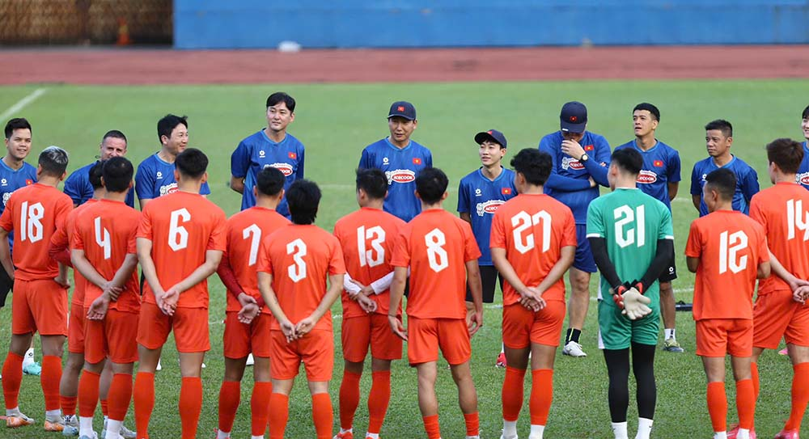
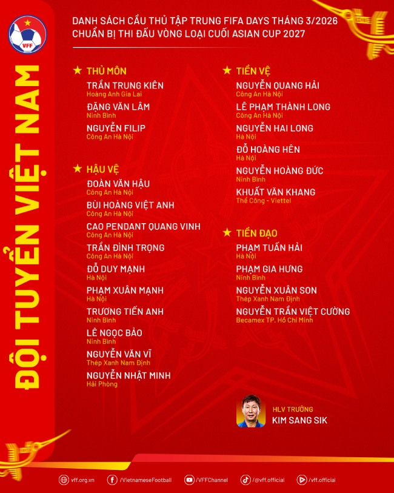

Danh sách đội tuyển Việt Nam: Hoàng Hên, Văn Hậu góp mặt
Huấn luyện viên Kim Sang-sik đã công bố danh sách đội tuyển Việt Nam với 23 cầu thủ.

Đội tuyển Việt Nam đã công bố danh sách 23 cầu thủ chuẩn bị cho đợt tập trung trong dịp FIFA Days tháng 3.
Bộ khung chính của đội tuyển tiếp tục được duy trì với những cái tên quen thuộc. Ở vị trí thủ môn có Đặng Văn Lâm hay Nguyễn Filip. Hàng phòng ngự gồm các lựa chọn như Duy Mạnh, Xuân Mạnh, Văn Vĩ...
Tuyến giữa vẫn xoay quanh Hoàng Đức và Quang Hải, trong khi hàng công có Tuấn Hải và Xuân Son. Đây là nhóm cầu thủ thường xuyên góp mặt trong các đợt tập trung gần đây và giữ vai trò quan trọng trong cách vận hành lối chơi.
Đáng chú ý, danh sách lần này có sự trở lại của Đoàn Văn Hậu và Trần Đình Trọng. Cả hai đều đã trải qua thời gian dài điều trị chấn thương trước khi lấy lại trạng thái thi đấu.
Đình Trọng đang có tần suất ra sân ổn định tại câu lạc bộ Công an Hà Nội, trong khi Văn Hậu bước đầu cho thấy sự hòa nhập khi trở lại thi đấu với những đóng góp cụ thể về chuyên môn. Đây cũng là lần đầu tiên bộ đôi này được triệu tập dưới thời huấn luyện viên Kim Sang-sik.
Bên cạnh các nhân tố quen thuộc, đội tuyển có thêm phương án mới với sự xuất hiện lần đầu của tiền vệ Đỗ Hoàng Hên. Cầu thủ này đã hoàn tất thủ tục quốc tịch và có nhiều năm thi đấu tại V.League trong màu áo Bình Định, Nam Đinh, Hà Nội FC. Khả năng xử lý bóng và tham gia tổ chức tấn công là những yếu tố giúp anh được lựa chọn ở đợt tập trung này.
Ở chiều ngược lại, đội tuyển không có sự phục vụ của hậu vệ Bùi Tiến Dũng do chấn thương. Tuy nhiên, hàng thủ vẫn có sự bổ sung khi Bùi Hoàng Việt Anh trở lại, giúp tăng thêm lựa chọn ở vị trí trung vệ.
Danh sách lần này cũng tiếp tục tạo điều kiện cho các cầu thủ trẻ như Trần Trung Kiên, Nguyễn Nhật Minh, Khuất Văn Khang tích lũy kinh nghiệm ở cấp độ đội tuyển. Một số gương mặt khác như Phạm Lý Đức và Nguyễn Đình Bắc không góp mặt do đang chấp hành án phạt thẻ tại giải U23 châu Á 2026.
Theo kế hoạch, đội tuyển Việt Nam sẽ hội quân tại Hà Nội từ ngày 21.3. Một số cầu thủ thi đấu tại cúp quốc gia và V.League sẽ tập trung muộn hơn.
Trong dịp FIFA Days, đội sẽ đá giao hữu với Bangladesh trên sân Hàng Đẫy ngày 26.3, trước khi di chuyển tới Ninh Bình để chuẩn bị cho trận gặp Malaysia tại vòng loại Asian Cup 2027 vào ngày 31.3.
Liên quan đến trường hợp thủ môn Patrik Lê Giang, cầu thủ này vẫn đang trong quá trình hoàn tất các thủ tục theo quy định của FIFA để đủ điều kiện chuyển đổi liên đoàn và thi đấu cho đội tuyển Việt Nam.
